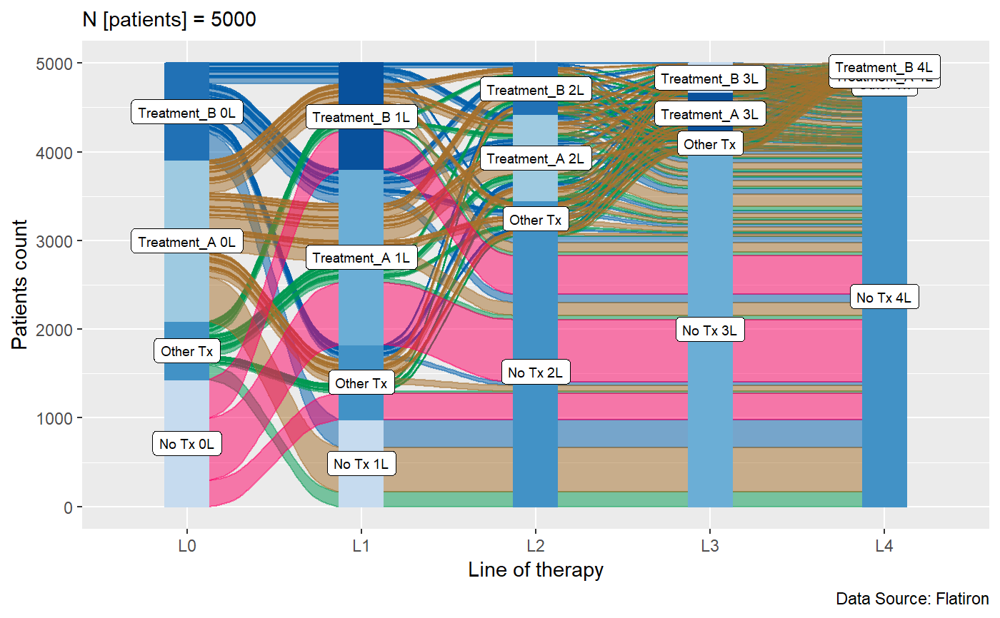
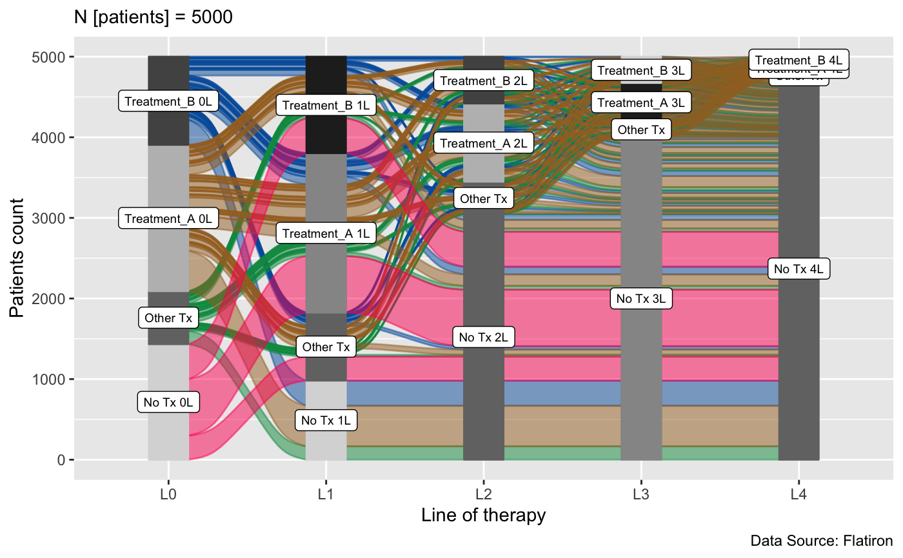

Create alluvial plot.
vr_alluvial_plot( data, id = "PatientID", linename = "LineName", linenumber = "LineNumber", n_common = 2, title = NULL, interactive = FALSE, N_unit = "patients", data_source = "Flatiron", fill_by = "first_variable", col_vector_flow = easyalluvial::palette_qualitative() %>% easyalluvial::palette_filter(greys = F), col_vector_value = RColorBrewer::brewer.pal(9, "Blues")[c(3, 6, 4, 7, 5, 8)], linenames_labels_size = 2.5 )
Arguments
| data | a dataframe |
|---|---|
| id | patient id variable name, Default: 'PatientID' |
| linename | lines of therapy variable name, Default: 'LineName' |
| linenumber | lines of therapy number variable name, Default: 'LineNumber' |
| n_common | Number of most common lines of therapy presented in alluvial plot, Default: 2 |
| title | plot title, Default: NULL |
| interactive, | interactive plot, Default: FALSE |
| N_unit, | Default: 'patients' |
| data_source | data source name, Default: 'Flatiron' |
| fill_by | one_of(c('first_variable', 'last_variable', 'all_flows', 'values')), Default: 'first_variable' |
| col_vector_flow | HEX color values for flows, Default: easyalluvial::palette_filter( greys = F) |
| col_vector_value | HEX color values for y levels/values, Default:RColorBrewer::brewer.pal(9, 'Blues')c(3,6,4,7,5,8) |
| linenames_labels_size, | Default: 2.5 |
Value
list
Examples
dataset <- NULL for(PatientID in 1:5000){ max_line <- sample(0:5, 1, prob = c(0.2, 0.4, 0.2, 0.15, 0.04, 0.01)) if(max_line == 1){ min_line <- sample(c(0, 1), 1, prob = c(0.3, 0.7)) } else{ min_line <- 0 } for(LineNumber in min_line:max_line){ LineName <- sample(c('Treatment_A', 'Treatment_B', 'Treatment_C'), 1, prob = c(0.5, 0.3, 0.2)) patient_data_line <- data.frame(PatientID = PatientID, LineName = LineName, LineNumber = LineNumber) dataset <- rbind(patient_data_line , dataset) } } vr_alluvial_plot(dataset)vr_alluvial_plot(dataset, interactive = TRUE) vr_alluvial_plot(dataset, fill_by = "all_flows")vr_alluvial_plot(dataset, interactive = TRUE, fill_by = "all_flows") vr_alluvial_plot(dataset, col_vector_value = RColorBrewer::brewer.pal(9, 'Greys')[c(3,6,4,7,5,8)])